I been tryna call, I been on my own for long enough
Maybe you can show me how to love, maybe
I'm going through a crisis, I thought I'd see the light
But there's nothing but blinding lights
I'm looking for something that I can't see
Maybe you can show it to me, maybe
I'm going through a crisis, I thought I'd see the light
But there's nothing but blinding lights
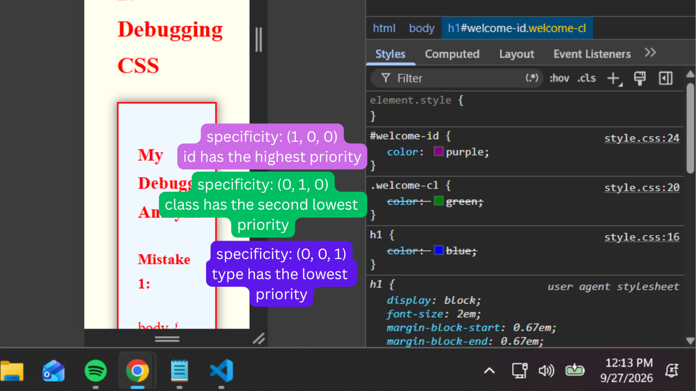
Annotated DevTools screenshot
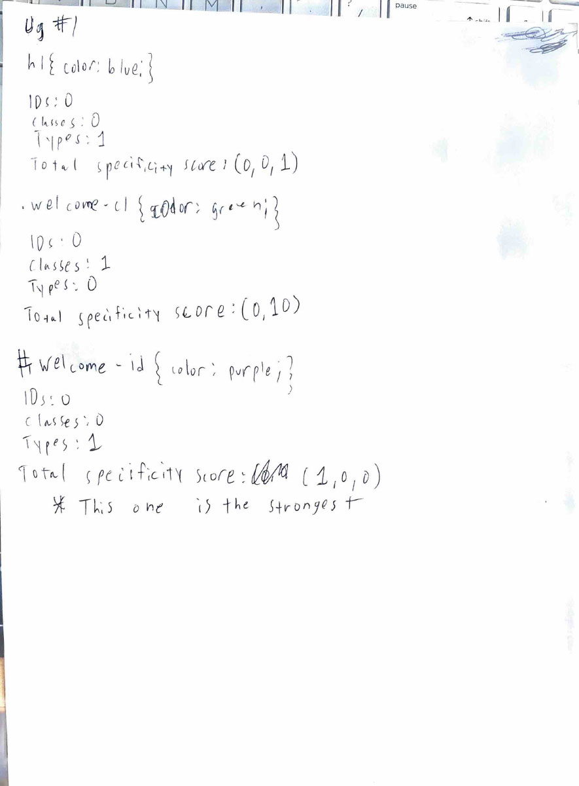
Handwritten specificity calculation for 3 different declarations
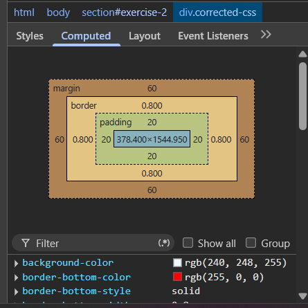
Box model using the border box constraint
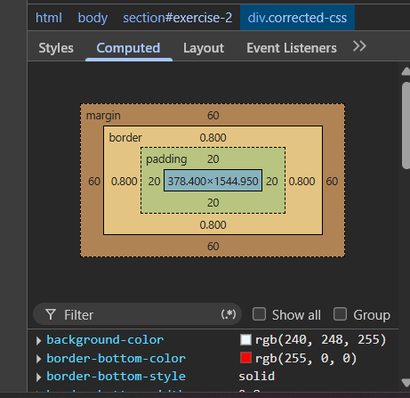
Box model using the content box constraint
Widths Before: (border + padding + content) 1.6 + 40 + 498.0 = 539.6 Widths After: (border + padding + content) 1.6 + 40 + 378.4 = 420.0 The widths for both content box and border box settings were the same because I was tweaking the margin values
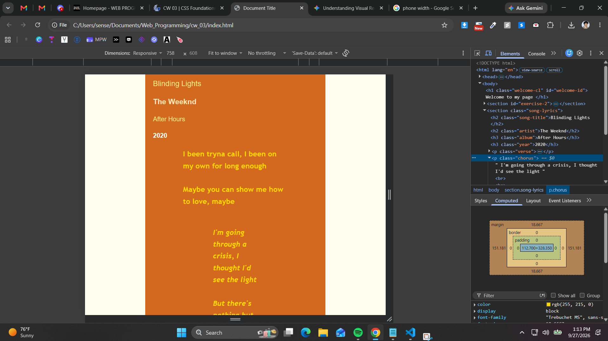
Odd viewport before my media query
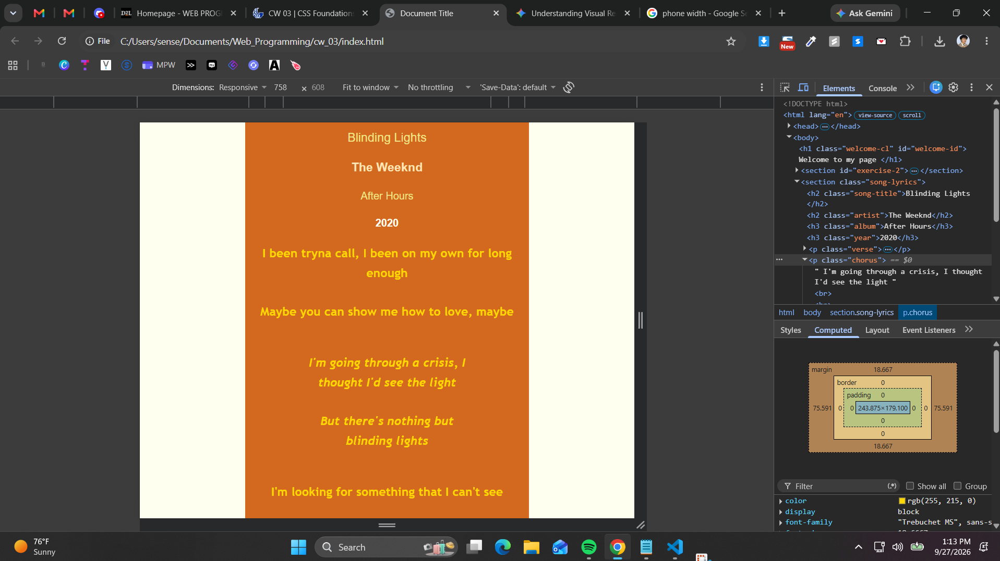
Odd viewport after my media query
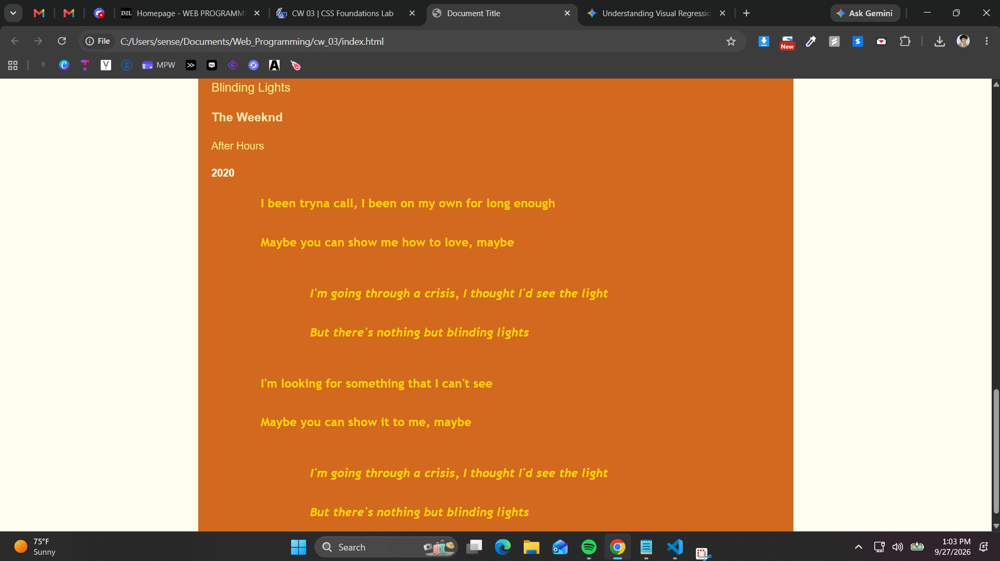
Desktop regression capture before my change
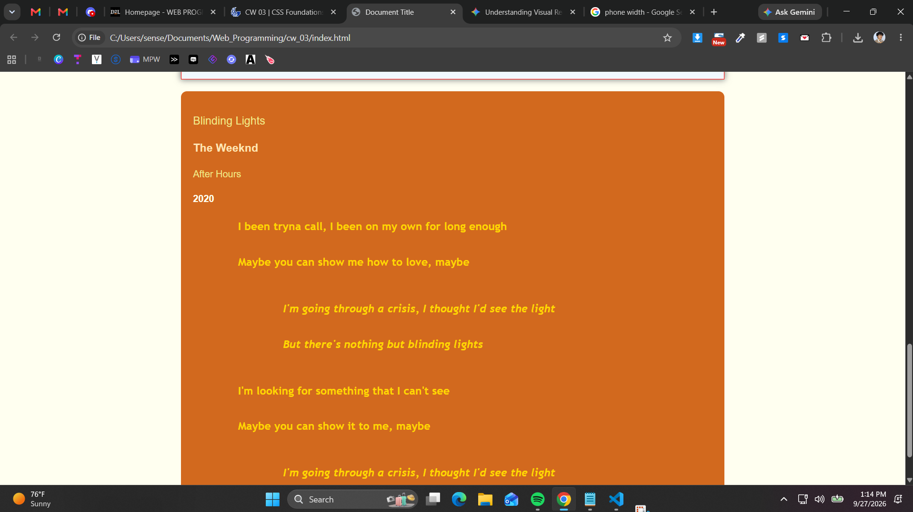
Desktop regression capture after my change
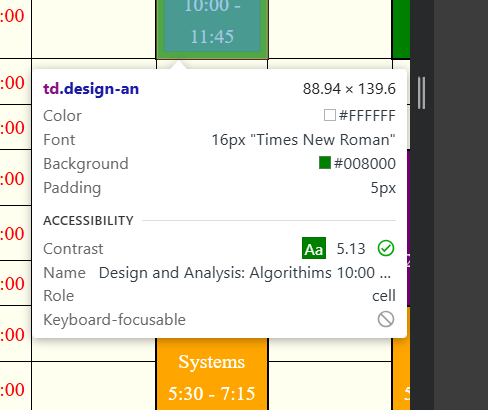
The contrast ratio for the green element with white text (reletively good)
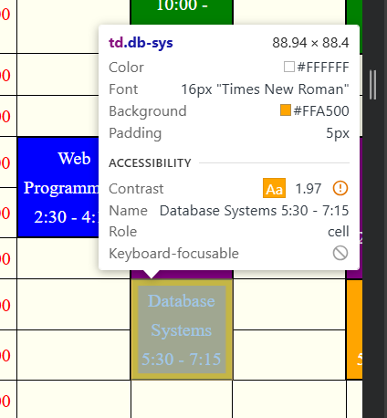
The contrast ratio for the purple element with white text (best one)
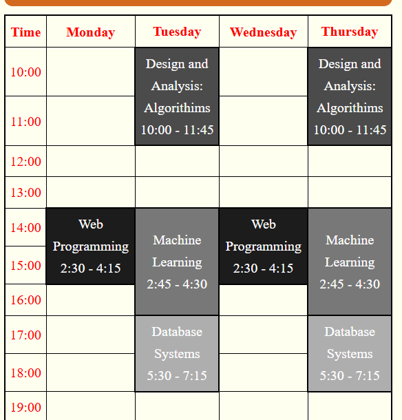
My Timetable adjusted to a greyscale color palette
The text and the positioning of the different blocks give alot of context but the text is the most helpful label for the different time blocks.
"The different shades help but i still need to rely on the text" -AT